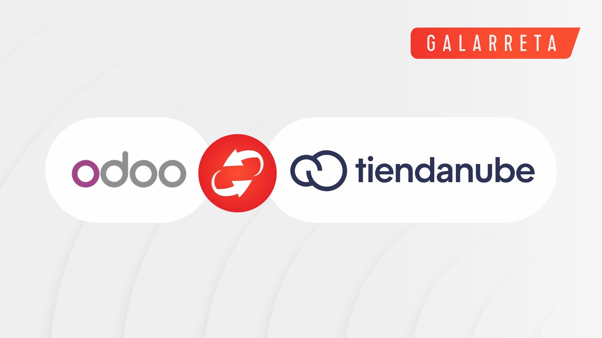

This app integrates Odoo with the TiendaNube (Nuvemshop) API. A TiendaNube store and a partner application (Client ID / Client Secret) are required. After you authorize the app with OAuth, products, stock and orders are exchanged between your Odoo instance and TiendaNube servers.
Once authorized, the connector exchanges only the data required for e-commerce operations — products, variants, stock levels, orders and the customer and shipping details provided by TiendaNube. All credentials and tokens are stored exclusively in your own Odoo database. No activation key, no third-party server, no lock-in. You own your data at all times.
Developed and maintained by Galarreta
For questions, issues or feature requests:
lautaro@galarreta.co